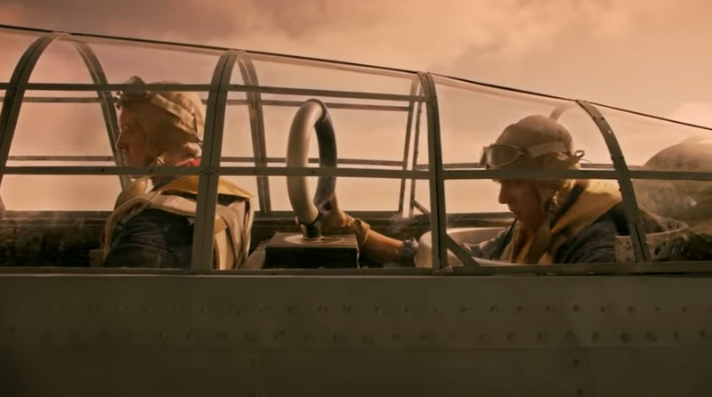
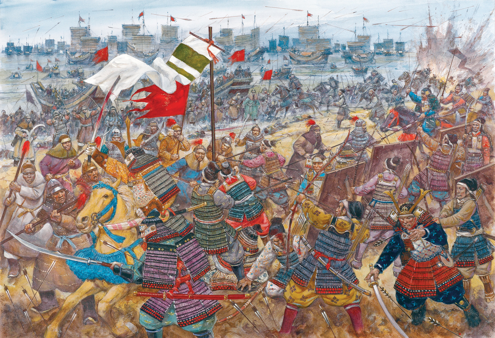
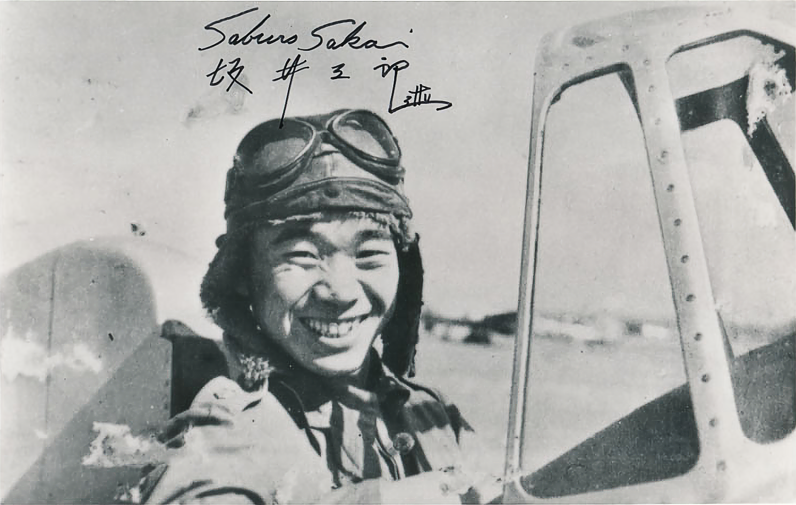
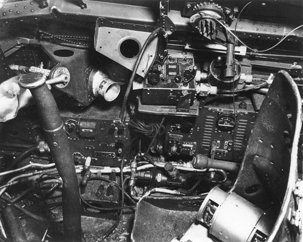
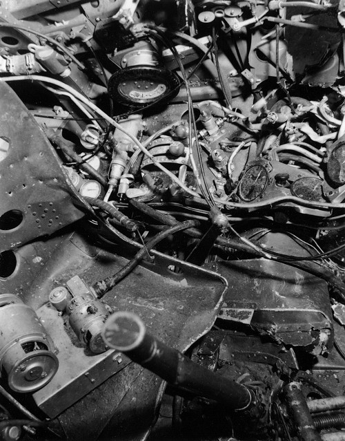
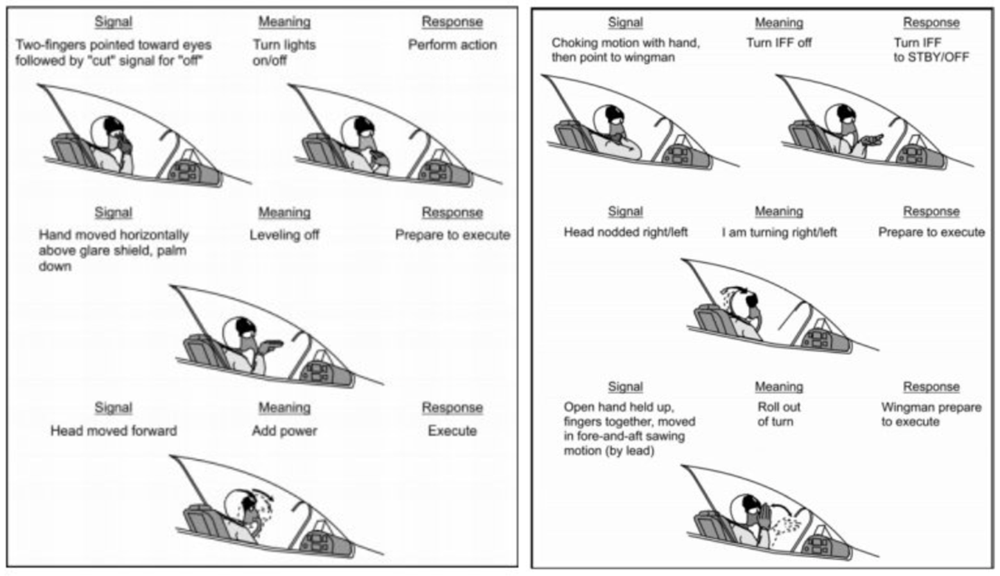
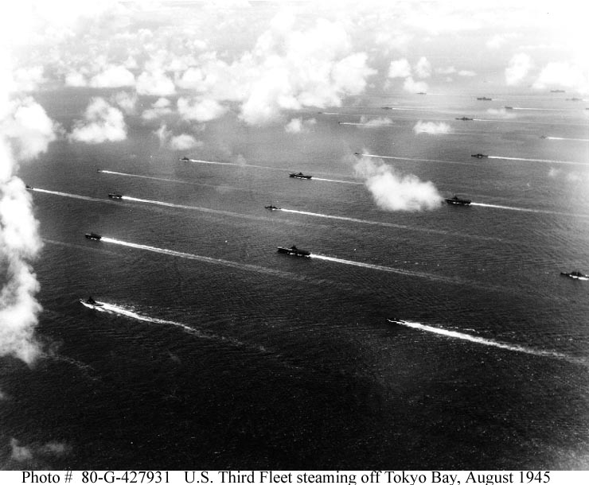

미드웨이에서의 레이더 이야기 (1) - 과묵한 일본 조종사
게시: 2023-12-14T06:30:25+09:00
<총칼보다 중요한 것> 지난 편을 요약하면, 산호해 해전에서 USS Lexington이 왜 격침되었는가를 조사한 미해군은 '레이더 팀에게 넓은 방에 작도 장비와 칠판 등을 충분히 주고 통신 시설 강화하라'는 결론을 도출했음. 일본해군에게 조사를 시켰으면 조종사들 정신 교육을 강화하라는 결론이 나왔을지 모르겠는데, 실제로 미해군과 일본해군의 큰 차이 중 하나가 바로 통신이었음. 흔히 군대는 총칼로 싸우는 것이 아니라 보급으로 싸운다고 하는데, 그에 못지 않게 중요한 것이 바로 통신. 전통적으로 육군이야 전령이 왔다갔다 할 수도 있고 유선통신 발명 이후로는 전화를 통해 이야기를 하면 되었으므로 큰 문제가 없었으나, 해군은 예로부터 함선 간에, 그리고 해안 요새와 함선 간에 어떻게 효율적으로 통신을 할 수 있을까에 대한 고민이 많았음. 그 결과로 나온 것이 깃발 신호, 점멸 신호와 해안가의 telegraph (또는 semaphore) 등 나름 기발하고 정교한 통신 시스템들. * 깃발 신호에 대해서는 https://nasica1.tistory.com/56 참조 * telegraph에 대해서는 https://nasica1.tistory.com/83 참조 이런 자질구레한 시스템들을 일거에 갈아치울 기세로 나온 것이 바로 무선통신. 그러나 무선통신이 광범위하게 안정적으로 사용되고나서도 깃발 신호 및 점멸 신호는 의외로 사라지지 않았고 함선 간의 통신에 계속 사용되었음. 이유는 무선은 감청이 가능했기 때문. 게다가 전파의 존재를 실험으로 입증한 헤르츠 박사가 그 초기 실험에서 우연히 발견한 loop antenna에 의한 전파 발신 방향 탐지 방법 덕분에, 바다 위에서 함선 간에 무선 통신을 한다는 것은 '나 여기 있소'라는 것을 동네방네 방송하는 꼴이 되어 버렸기 떄문. 덕분에 어느 나라나 해군에서는 작전시에는 radio silence, 즉 무선통신 금지가 강력하게 시행되었음.

(미해군 뇌격기 Devastator에 달려 있는 저 loop antenna는 적의 무선 통신을 포착하여 적 함대의 방향을 찾기 위해 설치된 것은 아니고, 함재기가 모함의 위치를 찾을 수 있도록 특수 방식으로 쏘아주는 hayrake 시스템의 수신 안테나.)
<하늘의 사무라이> WW2 영화를 보면 영국/미국 조종사들은 편대원들끼리 쉬지 않고 조잘조잘댐. 니 뒤에 적기가 붙었다, 북쪽으로 선회하라, 나 좀 살려달라 등등... 그건 어찌 보면 수다스러운 것이지만 그만큼 협동전술에 진심이었다는 뜻. 그러나 같은 WW2 영화 속에서, 일본 조종사들은 과묵함. 이건 단순히 서구 영화 감독들이 일본측 시각을 별로 반영하지 않았기 때문일까? 몽골 침략때, 일대일로 싸우는 것에 익숙했던 일본 무사들은 상륙한 몽골군이 집단 전술을 구사하는 것을 보고 깜놀. 사무라이 개인의 기량을 중시했던 일본군에게 수백 수천 명이 우르르 몰려다니며 협동전술을 펼치던 몽골군은 대단한 문화 충격.

(흔히 알려진 것과는 달리, 몽골군이 상륙도 못 해보고 태풍에 꼬로록한 것은 아님. 일단 상륙은 했고, 서전에서도 승리했으나, 그날 밤 배로 돌아가 잠을 자다 그만 꼬로록...)
그런 사무라이 정신은 WW2 때까지 그대로 계승되어, 하늘의 사무라이라고 자처하던 일본해군 전투기 조종사들은 개개인의 뛰어난 조종술을 중시. 임무 비행을 나갈 때도 사전 브리핑은 철저히 했고 편대 비행을 할 때도 엄격한 지휘 체계를 유지했지만, 일단 적기와 만나 공중전이 벌어지면 그 다음부터는 정말 개개인의 기량과 헌신, 상황 판단에 의존. 그야말로 하늘의 사무라이.

(일본해군 에이스인 사부로 사카이. 이건 1939년 중국에서의 모습. 본인 주장으로는 총 64대를 격추했다고 하는데 실제로는 24대 정도가 인정된다고도 하고... 아무튼 낚시꾼과 전투기 조종사의 주장은 절대 액면 그대로 받아들이면 안 됨. 아무튼 별로 과묵하게 보이지는 않음.)
실은 하늘의 과묵한 사무라이가 된 것은 꼭 일본의 전통을 따르느라 그렇게 된 것은 아님. 제로센 전투기에 탑재된 무전기의 성능과 품질이 개판이었던 것. 눈에 보이는 것을 좋아하는 문화에서는 중후장대한 것, 그러니까 거대한 전함과 항모의 배수량과 대포 구경, 전함과 항공기의 속도, 무장량 등을 중시하는 경향이 있음. 그러나 위에서도 언급했듯이 전쟁은 총칼이 아니라 보급으로 하는 것이고, 또 통신으로 하는 것. 그런데 일본군은 바로 그 보급과 통신을 경시하는 경향이 있었고, 그래서 수송기와 무전기 성능이 개판이었음. 게다가 일본해군의 경우는 무선 침묵을 지나치게 강조했음. 잘 모르면 무서워하는 법인데, 일찌기 야기 안테나를 발명할 정도로 나름 전자기학 쪽에 훌륭한 인재들이 있었던 일본이었으나 정작 일본 군부는 전자기쪽으로는 관심이 없어서 약간의 통신만으로도 자신들의 위치가 발각될 수 있다고 지나치게 두려워 했음. 그래서 꼭 필요한 무선 통신은 본토 해군기지가 있던 쿠레에서 장파를 이용해 태평양 전역으로 송신. 심지어 남중국해 풍랑 속에서 함대 중 하나가 미군 잠수함에게 어뢰를 맞고 침몰하게 되자 SOS 무선을 쳤는데, 무전기 품질이 좋지 않아 같은 함대 내의 다른 군함들은 그 무전을 듣지 못했고, 본토 쿠레 기지에서 그 신호를 수신하여 다시 광역 송신해줘야 했을 정도.

(제로센 전투기 조종석 오른쪽 모습. 가운데 보이는 것이 무선 송신기. 수신기는 따로 있다는데 그 왼쪽에 있는 장치인 것 같기도 하고...)

(제로센 전투기 조종석 왼쪽의 모습은 훨씬 더 처참... 너무 날림으로 만든 것 같음.)
특히 제로센의 경우, 하필 엔진 점화 플러그의 스파크가 일으키는 전자파가 무전기 주파수를 매우 효율적으로 재밍했고, 그래서 먹통이 되는 경우가 많았음. 어느 정도였는가 하면, 망망대해에서 모함을 찾아야 했던 함재 제로센의 경우엔 그러지 않았지만, 라바울 등 지상 기지에 배치된 제로센들은 편대장기를 제외하고는 모두 무전기를 떼놓고 다닐 정도. 무겁기만 할 뿐 통신이 제대로 안 되는데다, 어차피 일본해군은 과도할 정도로 무선 침묵을 중요시하여 편대기 간의 통신은 주로 수신호를 통해서 했음. 그러니 지상 기지와 통신을 해야 할 필요에 대비해서 편대장기에만 무전기를 남겨두고 나머지는 다 떼어버렸던 것. 그러니 공중전이 벌어지면 영국미국 전투기 조종사들처럼 편대 동료들과 재잘재잘 떠들 수가 없었음. 편대 비행을 힐 때는 편대장의 수신호에 따르면 되었으나 일단 독파이트가 벌어지면 수신호를 주고 받을 경황이 없으니 정말 각자 알아서 판단하고 싸워야 했음.

(조종사들은 뭔가 외울 것도 참 많은 듯)
<CAP 통제는 어떻게?> 여기서 의문이 들 수 있음. 그러면 항모 상황실에 앉아있는 항공 통제관은 항모 전단, 일본식 용어로 기동부대 위를 날아다니며 CAP을 치는 전투기들에게 어떻게 어느 방향으로 날아오는 적기를 요격하라고 지시할 수 있었을까? 그게... 일단 일본 해군에게는 적어도 미드웨이 해전에서는 레이더가 없었다는 사실을 잊으면 안 됨. 그러니 항모에서 CAP 전투기들에게 적이 어디서 온다고 알려주는 것이 아니라, CAP 전투기들이 두 눈 부릅 뜨고 부지런히 둘러보며 적기의 내습을 직접 찾아야 했음. 어느 방향에서 적기가 날아온다는 것을 안다고 하더라도, 아무리 날씨가 좋고 햇빛 방향이 유리한 쪽에 있다고 하더라도 맨눈으로는 30km 바깥의 항공기를 보기 어려움. 그래서 조금이라도 더 일찍 적기의 내습을 찾기 위해서 일본 기동부대는 미해군 항모전단과는 다른 형태의 진형을 갖추었음. 미해군은 적기 내습시 항모를 뺵빽한 대공포 탄막으로 보호하기 위해 순양함과 구축함 등의 호위함들을 항모를 중심으로 비교적 가까이 밀집 배치. 그에 비해 일본해군은 조금이라도 더 먼저 적기의 내습을 눈으로 찾기 위해 구축함 등을 항모를 중심으로 가급적 멀리 배치했음.

(실제 전투에서는 폭탄 및 어뢰에 대한 회피 기동을 해야 하기 때문에 저것보다는 훨씬 더 산개한 대형을 유지할 듯.)
미해군 Dauntless SBD 급강하 폭격기의 순항 속도는 약 300km/h. 1분에 5km를 주파. 그러니 구축함들을 항모에서 10km 바깥 쪽에 원형으로 깔아두면 적어도 2분 먼저 적기를 발견하는 셈. 만약 그렇게 외곽 구축함에서 적기를 발견하면? 무선 침묵을 중시하는 일본 해군에서는 무전기로 CAP에게 적기의 방향을 알려주는 것은 절대 있을 수 없는 일. 그 구축함에서 (맞으라고 쏘는 것이 아니라) 아군 CAP 전투기들에게 적기 내습과 그 방향을 알려주기 위해 그 방향으로 주포를 쏘았음. 소리가 들렸는지는 모르겠으나 상공의 CAP 제로센들은 그 섬광과 포연을 보고 그 방향으로 달려갔음.

(돈틀리스 급강하 폭격기는 최대 속도가 410km/h. 순항 속도는 295km/h.)
여기서 또 의문. 어차피 적기가 나타났다는 것은 이미 자신들의 위치가 발각되었다는 것인데, 굳이 그렇게 무선 침묵을 지킬 이유가 있었을까? 제로센 무전기의 성능을 믿지 못해 방위각 등의 정보를 지직거리고 잘 안 들리는 음성으로 전해주는 것보다는 그냥 대포를 쏘았다고 보는 것은 일본군 무전기를 너무나 고물 취급하는 것.
실은 여기에는 일본해군 지휘부의 너무나 안일하고 창의적이지 못한 무전 운용 방식에도 문제가 있었음. 폭격기-뇌격기-전투기 편대가 모두 항모와 단 하나의 채널을 이용해서 통신을 했던 것. 그러니 수십 대 수십 명이 일제히 떠들어대면 아무도 알아들을 수가 없어서 꼭 필요하고 가장 우선순위가 높은 메시지 이외에는 교신을 극도로 제한하는 분위기. 그런데 공격 위주의 일본해군에게 가장 중요한 것은 어디선가 '적 함대 발견, 위치는 XXX...'이라는 교신이었기 때문에, 적기가 어느 방향에서 날아온다 따위의 교신은 극도로 자제.
이런 통제 방식의 문제점은 또 있었음. 그렇게 눈으로 함대 전체를 볼 수 있는 위치에 있어야 했기 때문에, 일본 CAP 전투기들은 멀리 나가지 못하고 언제나 함대 상공 바로 위에서 맴돌아야 했음. 이런 식으로, 일본 CAP 전투기들은 레이더의 유도를 받는 미해군 CAP에 비해 통상 10분 늦게 반응했다고. 항공전에서 10분이면 엄청난 차이. 적어도 카가, 아까기, 소류의 정규항모 3척이 박살나기에 충분한 시간. Source : https://www.usni.org/magazines/naval-history-magazine/1992/june/radar-and-air-battles-midway https://ethw.org/Midway_-_Chapter_7_of_Radar_and_the_Fighter_Directors https://j-aircraft.com/research/gregspringer/radios/radio_systems.htm